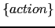

Sig: Recursión por la Izquierda
Sup: La Estructura de los
Ant: Práctica: Generación Automática de
Err: Si hallas una errata ...
Esquemas de Traducción
Definición 4.7.1
Un esquema de traducción es una gramática independiente del contexto
en la cual se han insertado fragmentos de código en las partes derechas
de sus reglas de producción. Los fragmentos de código asi insertados
se denominan acciones semánticas. Dichos fragmentos actúan, calculan
y modifican los atributos asociados con los nodos del árbol sintáctico.
El orden en que se evalúan los fragmentos
es el de un recorrido primero-profundo del árbol de análisis sintáctico.
Obsérvese que, en general, para poder aplicar un esquema de traducción hay
que construir el árbol sintáctico y después aplicar las acciones empotradas
en las reglas en el orden de recorrido primero-profundo. Por supuesto, si
la gramática es ambigua una frase podría tener dos árboles y la ejecución de las
acciones para ellos podría dar lugar a diferentes resultados. Si se quiere
evitar la multiplicidad de resultados (interpretaciones semánticas)
es necesario precisar de que árbol sintáctico concreto se esta hablando.
Por ejemplo, si en la regla
 insertamos un fragmento de código:
insertamos un fragmento de código:
La acción

se ejecutará después de todas las acciones
asociadas con el recorrido del subárbol de  y antes que todas
las acciones asociadas con el recorrido del subárbol
y antes que todas
las acciones asociadas con el recorrido del subárbol  .
.
El siguiente esquema de traducción recibe como entrada una expresión en infijo
y produce como salida su traducción a postfijo para expresiones aritmeticas con sólo
restas de números:

|
{ $expr{TRA} = $expr[1]{TRA}." ".$NUM{VAL}." - "} |

|
{ $expr{TRA} = $NUM{VAL} } |
Las apariciones de variables sintácticas en una regla de producción se indexan
como se ve en el ejemplo, para distinguir de que nodo del árbol de análisis estamos
hablando. Cuando hablemos del atributo de un nodo utilizaremos una indexación tipo
hash. Aquí VAL es un atributo de los nodos de tipo  denotando
su valor numérico y para accederlo escribiremos
denotando
su valor numérico y para accederlo escribiremos $NUM{VAL}.
Análogamente $expr{TRA} denota el atributo ``traducción'' de
los nodos de tipo  .
.
Ejercicio 4.7.1
Muestre la secuencia de acciones a la
que da lugar el esquema de traducción anterior
para la frase 7 -5 -4.
En este ejemplo, el cómputo del atributo $expr{TRA} depende de los atributos
en los nodos hijos, o lo que es lo mismo, depende de los atributos de los símbolos
en la parte derecha de la regla de producción. Esto ocurre a menudo y motiva la siguiente
definición:
Definición 4.7.2
Un atributo tal que su valor en un nodo
puede ser computado en términos de los atributos de los hijos del nodo se dice
que es un atributo sintetizado.
Definición 4.7.3
Un atributo heredado es aquel cuyo valor se computa a partir de los
valores de sus hermanos y de su padre.
Ejercicio 4.7.2
Escriba un esquema de traducción que convierta expresiones en infijo con los
operadores +-*/() y números en expresiones en postfijo. Explique el significado
de los atributos elegidos.
Sig: Recursión por la Izquierda
Sup: La Estructura de los
Ant: Práctica: Generación Automática de
Err: Si hallas una errata ...
Casiano Rodríguez León
2013-03-05